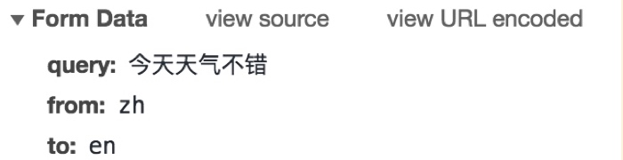
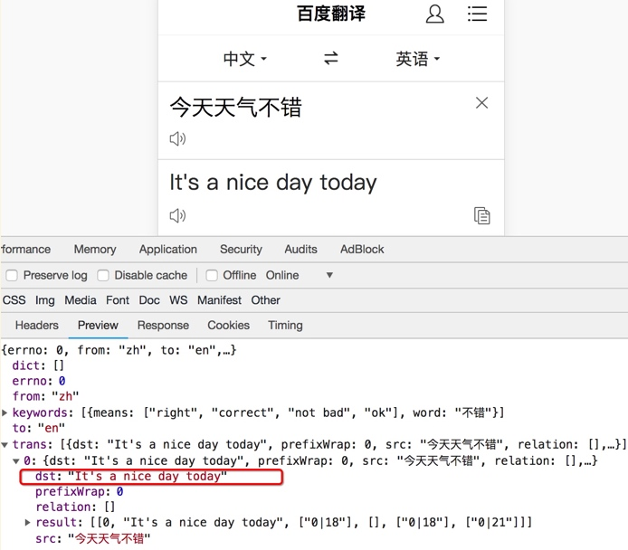

使用requests发送POST请求
学习目标：
- 能够应用requests发送post请求的方法
1. 引入
思考：哪些地方我们会用到POST请求？
- 登录注册（ POST 比 GET 更安全）
- 需要传输大文本内容的时候（ POST 请求对数据长度没有要求）
所以同样的，我们的爬虫也需要在这两个地方会去模拟浏览器发送post请求
2. requests发送post请求语法：
用法：
response = requests.post("http://www.baidu.com/", data=data, headers=headers)data 的形式：字典
3. POST请求练习
下面面我们通过手机版百度翻译的例子看看post请求如何使用：
思路分析
抓包确定请求的url地址

确定请求的参数

确定返回数据的位置

模拟浏览器获取数据
参考代码
import requests
import json
# 准备url
url = "https://fanyi.baidu.com/basetrans"
# 准备post提交时的请求体
data = {
"query": "hello",
"from": "en",
"to": "zh",
"token": "c4eda15d24c81f426053e251f6dbd534",
"sign": "54706.276099"
}
# 准备请求时的请求头(注意要使用手机端的浏览器user-agent)
headers = {
"User-Agent": "Mozilla/5.0 (iPhone; CPU iPhone OS 11_0 like Mac OS X) AppleWebKit/604.1.38 (KHTML, like Gecko) Version/11.0 Mobile/15A372 Safari/604.1",
"cookie": "BIDUPSID=17E4B76CEDABD07968243F570B0ADE1D; PSTM=1561512047; REALTIME_TRANS_SWITCH=1; FANYI_WORD_SWITCH=1; HISTORY_SWITCH=1; SOUND_SPD_SWITCH=1; SOUND_PREFER_SWITCH=1; BAIDUID=17E4B76CEDABD07968243F570B0ADE1D:SL=0:NR=10:FG=1; BDORZ=B490B5EBF6F3CD402E515D22BCDA1598; BDUSS=tQNmVtLW9TWHNwMkFFdmRBZlM4R1NpcG0zekZkc2diRW93U1ZvcUw5Slh2a0JkSUFBQUFBJCQAAAAAAAAAAAEAAAAn4NUTZG9uZ7fJx-8AAAAAAAAAAAAAAAAAAAAAAAAAAAAAAAAAAAAAAAAAAAAAAAAAAAAAAAAAAAAAAAAAAAAAAAAAAFcxGV1XMRldZU; bdindexid=94750rpprpo3cs0sbfn6hqtl36; to_lang_often=%5B%7B%22value%22%3A%22en%22%2C%22text%22%3A%22%u82F1%u8BED%22%7D%2C%7B%22value%22%3A%22zh%22%2C%22text%22%3A%22%u4E2D%u6587%22%7D%5D; from_lang_often=%5B%7B%22value%22%3A%22zh%22%2C%22text%22%3A%22%u4E2D%u6587%22%7D%2C%7B%22value%22%3A%22en%22%2C%22text%22%3A%22%u82F1%u8BED%22%7D%5D; H_PS_PSSID=1429_21083_29135_29238_28519_29099_28837_29221_26350; delPer=0; PSINO=1; locale=zh; Hm_lvt_64ecd82404c51e03dc91cb9e8c025574=1561535088,1561932723,1561982051,1561982057; Hm_lpvt_64ecd82404c51e03dc91cb9e8c025574=1561982057; Hm_lvt_afd111fa62852d1f37001d1f980b6800=1561982058; Hm_lpvt_afd111fa62852d1f37001d1f980b6800=1561982058; yjs_js_security_passport=e92a041837b81c414625a0fdae43741481138753_1561982066_js; ___rl__test__cookies=1561982063535; OUTFOX_SEARCH_USER_ID_NCOO=278814648.74166065",
}
# 发送POST请求
response = requests.post(url=url, data=data, headers=headers)
# 将json格式的字符串数据转换为字典
ret = json.loads(response.content.decode())
print(type(ret))
print(ret["trans"][0]["dst"]) # 打印结果
运行结果：
小结
在模拟登陆等场景，经常需要发送post请求，直接使用requests.post(url,data)即可